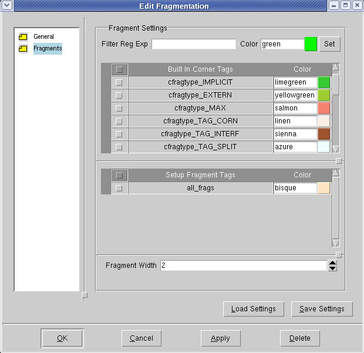

You can set the
display properties for tagged groups of fragments, providing them
with unique colors for easier identification on the layout.
Procedure
- Click a
fragment and choose the menu
option. The Edit Fragmentation dialog box appears.
- Click the Fragments icon in the left
side of the Edit Fragmentation dialog box.
- In the Edit Fragmentation
dialog box (Fragments view) (see Figure 1), set the set colors and widths for
groups of tagged fragments.
- Add tags to the list by selecting
a fragment from one of the iterations of fragment layers.
Although the Edit Fragmentation
dialog box displays the entire list of built-in tags, if you select
a tag that is not used by OPC, it will not highlight any fragments.
This dialog box displays only
the tags that are used by OPC in the region you select for fragmentation.
Figure 1. Edit Fragmentation
Dialog Box (Fragments)